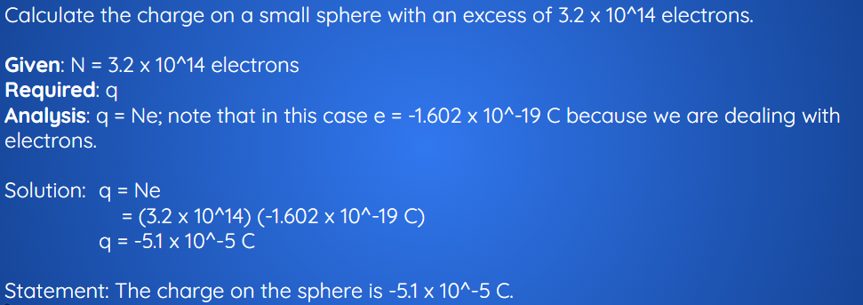

The Millikan Oil Drop Experiment
"How tall are you? How much do you weigh?" Questions like these are easy to answer because we have tools to make the measurements. A yard stick or tape measure will suffice to measure height. You can stand on a bathroom scale and determine your weight.
It is a very different matter to measure properties of objects that we cannot see with the naked eye. If we want to measure the size of a germ, we have to use a microscope. To learn the size of a single molecule, we have to use even more sophisticated instruments. So how would we measure something even smaller than a molecule, even smaller than an atom?
Charge and Mass of the Electron
Callout
The man who measured properties of the electron was Robert Millikan (1868-1953). He taught himself physics while a student at Oberlin College' since there was nobody on the faculty to instruct him in this field. Millikan completed postgraduate research training in the U.S. and in Germany. His studies on the properties of the electron proved to be of great value in many areas of physics and chemistry.

Oil Drop Experiment
Callout
Millikan carried out a series of experiments between 1908 and 1917 that allowed him to determine the charge of a single electron, famously known as the oil drop experiment.
Millikan sprayed tiny drops of oil into a chamber. In his first experiment, he simply measured how fast the drops fell under the force of gravity. He could then calculate the mass of the individual drops. Then, he sprayed oil drops and applied an electrical charge to them by shining x-rays up through the bottom of the apparatus. The x-rays ionize the air, causing electrons to attach to the oil drops. The oil drops picked up static charge and was suspended between two charged plates. Millikan was able to observe the motion of the oil drops with a microscope and found that the drops lined up in a specific way between the plates, based on the number of electric charges they had acquired.

Millikan used the information to calculate the charge of an electron. He determined the charge to be 1.5924×10−19C, where C stands for coulomb, which is one ampere*second. Today, the accepted value of the charge of an electron is 1.602176487×10−19C.
Millikan's experimental value proved very accurate; it is within 1% of the currently accepted value. Millikan later used the information from his oil drop experiment to calculate the mass of an electron. The accepted value today is 9.10938215×10−31kg. The incredibly small mass of the electron was found to be approximately 1/1840 the mass of a hydrogen atom. Therefore, Scientists realized that atoms must contain another particle that carries a positive charge and is far more massive than the electron.
Physicist Robert Millikan set out in 1909 to examine the existence of fundamental charge using a series of experiments. Millikan’s work demonstrated that the electron is a fundamental particle with a unique charge. This electric charge is considered one of a few fundamental physical constants—measurable values that can be determined by demonstration and do not vary—that define natural laws.
Millikan hypothesized that an elementary charge, e, the smallest unit of charge in nature, did exist and that the charge of the electron equaled this elementary charge. To measure the charge, Millikan used a fine mist of oil droplets sprayed from an
atomizer similar to what you may find on perfume bottles. The droplets picked up electric charges due to friction when sprayed from the atomizer. Millikan further hypothesized that the amount of charge anyone drop picked up would be a whole-number multiple of the fundamental charge.
Callout
To measure the charge on a drop, Millikan used a device called an electrical microbalance. He allowed the oil drops to fall into a region between two oppositely charged parallel plates. The charges on the plates mean that there is an electric field in the space between the plates, which creates a potential difference between the top plate and the bottom plate. Millikan connected the plates to a series of adjustable batteries so that he could adjust the magnitude of the electric field and, therefore, the electric force on the droplets. By adjusting the electric force to balance the downward gravitational force, Millikan could bring a charged drop of oil to rest in the region between the plates.

A charged oil drop will be suspended between two charged plates when the electric force on the drop balances the gravitational force.
To measure the mass of a drop, Millikan simply switched off the electric field and observed the final speed of the drop as it fell onto the bottom plate. From the final speed, he could calculate the mass of the drop if he accounted for both the gravitational force and the force due to air friction. With this information, he could determine the charge on the drop.
Millikan repeated his experiment many times, balancing a drop, measuring the voltage, letting the drop fall, and measuring its final speed. When he analyzed the data, he discovered the hypothesized pattern. The values of the charges he measured were whole-number multiples of some smallest value, and no drops had less charge than this value. Millikan concluded that this charge value equaled the elementary charge of the electron. In fact, we now think of this positive number as the charge of the proton, but the absolute value is the same for electrons.
